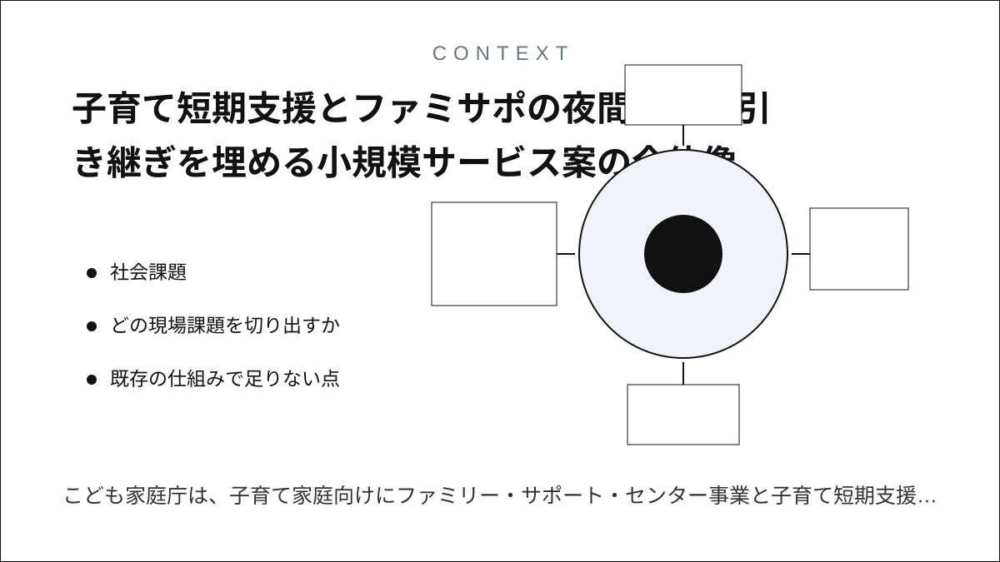
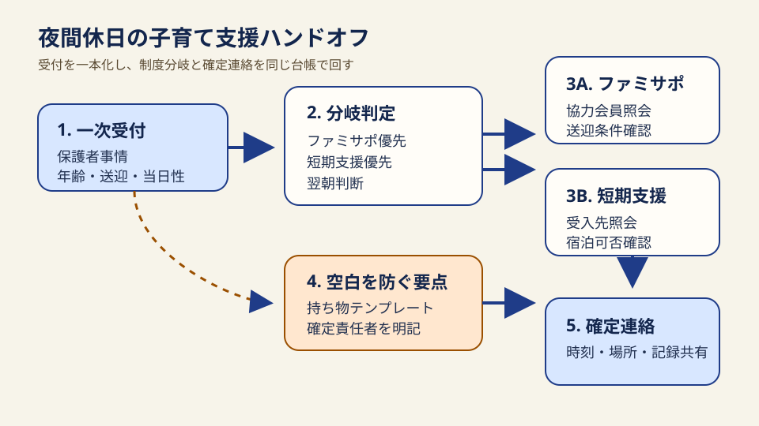
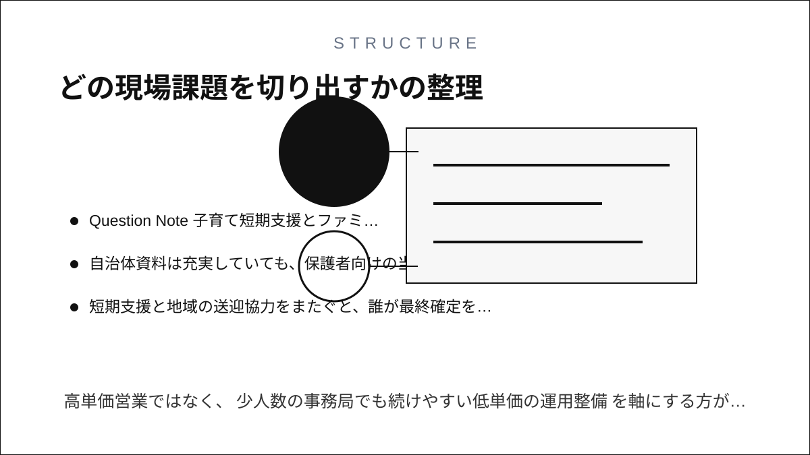
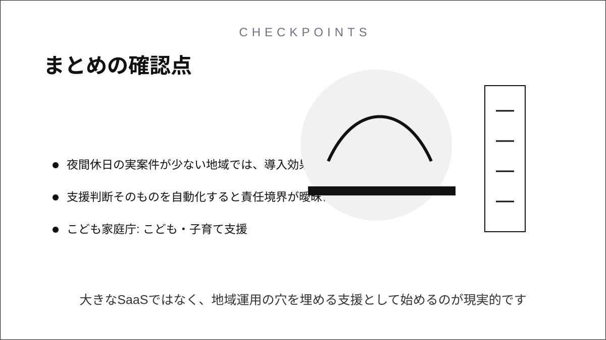

Question Note
子育て短期支援とファミサポの夜間・休日引き継ぎを埋める小規模サービス案


社会課題
こども家庭庁は、子育て家庭向けにファミリー・サポート・センター事業と子育て短期支援事業を別制度として整備し、 2026年6月11日にはファミリー・サポート・センター資料を更新し、子育て短期支援事業でも2026年度予算と2026年4月8日付の実施要綱を公開しています。 ただし、急な保護者の体調不良、夜勤、冠婚葬祭、きょうだいの付き添いなどが重なる場面では、 相談窓口、空き枠確認、送迎条件、当日持ち物の確認が制度ごとに分かれやすいため、 保護者と支援者のあいだに数時間単位の空白が残りやすい状態です。

ここでの表面課題は「預け先が見つからない」ことですが、深い運用課題は 夜間休日の一次受付が散ること、同日中に切り替える判断基準が揃わないこと、支援確定後の連絡が手作業で残ること にあります。
どの現場課題を切り出すか
| 現場課題 | 誰が困るか | 既存運用の限界 |
|---|---|---|
| 夜間休日の相談窓口が制度ごとに別 | 保護者が複数の連絡先を探し直し、自治体窓口も折り返し管理が増える | 制度紹介ページはあるが、同日中の横断ハンドオフを前提にした運用票がない |
| 預かり先ごとに送迎条件と必要情報が違う | 受入側が再確認に追われ、保護者は説明を何度も繰り返す | 実施要綱は整っていても、現場で使う短い確認票は自治体や事業者ごとにばらつく |
| 当日確定後の持ち物・到着時刻共有が弱い | 支援者、施設、保護者の到着差分で受入が遅れる | 電話と個別メール中心だと履歴が残りにくく、引き継ぎ漏れが起きやすい |
既存の仕組みで足りない点
- 制度そのものはあるが、夜間休日にどちらへ振るかを一目で決める運用導線が弱い
- 自治体資料は充実していても、保護者向けの当日確認項目が長く、現場での再入力が発生しやすい
- 短期支援と地域の送迎協力をまたぐと、誰が最終確定を出したかが追いにくい
サービス案
地域の子育て支援窓口、ファミサポ事務局、子育て短期支援の受入先が共通で使える 「夜間休日ハンドオフ台帳」を小さく提供する。制度改正や大型開発ではなく、 受付から支援確定までの判断材料と連絡順を揃える運用支援サービスとして始める。
- 相談内容を3分で記録できる一次受付フォーム
- ファミサポ優先、短期支援優先、翌朝判断の3分岐チェック
- 送迎可否、年齢条件、夜間可否、持病、きょうだい同伴の確認票
- 保護者向けの確定連絡テンプレートと持ち物リスト自動生成
- 月次で残す受付件数、成立率、折り返し遅延の簡易レポート
100万円規模で考える初期市場
全国展開は狙わず、子育て支援の相談件数が一定あり、夜間休日の運用整理を必要とする自治体委託先や地域NPO 60組織を 到達可能市場とみなします。初年度はそのうち16組織に導入し、月額利用料と初期整備費で約100万円の売上を作る想定です。
| 項目 | 想定 | 根拠 |
|---|---|---|
| 到達可能顧客数 | 60組織 | 自治体委託の支援拠点、社会福祉法人、地域NPOなど小規模運営主体に限定 |
| 初年度シェア | 16組織 | 既存の紙運用を残しつつ導入できる軽い支援として営業する前提 |
| 月額利用料 | 5,000円 | 960,000円/年 |
| 初期整備費 | 10,000円 x 6組織 | 60,000円 |
| 初年度売上合計 | 合計 | 1,020,000円 |
収益モデル
- 主収益: 組織ごとの月額利用料
- 副収益: 初期の確認票整備と連絡テンプレート整備費
- 副収益: 月次レポートの軽微なカスタム費
高単価営業ではなく、少人数の事務局でも続けやすい低単価の運用整備を軸にする方が、 初年度100万円規模には現実的です。
必要なシステムと支出
| 分類 | 何に使うか | 年間費用の目安 |
|---|---|---|
| フロントエンド | スマホで使える受付フォーム、確認票、確定連絡画面 | 0円 |
| バックエンド | 案件台帳、分岐ルール、組織別設定、履歴保存 | 42,000円 |
| 通知 | メール通知、当日確認の自動送信 | 18,000円 |
| レポート | 月次CSV、PDF出力、受付件数の集計 | 18,000円 |
| 運営 | ドメイン、バックアップ、問い合わせ対応、導入説明 | 82,000円 |
| その他 | 利用規約整備、説明資料更新、予備費 | 20,000円 |
| 年間支出合計 | 合計 | 180,000円 |
AIを使った開発見積もり
AIを使う前提では、要件整理、画面たたき台、分岐ロジック、CSV出力、説明文の草案を短時間で作れます。 その分、個人情報の扱い、自治体ごとの差分確認、支援判断の最終責任は人が持つ設計にして、 実装よりも運用確認に時間を回すべきです。
| 工程 | AIで短縮できること | 期間目安 |
|---|---|---|
| 要件整理 | 確認票の素案、分岐条件、画面項目の整理 | 3日 |
| プロトタイプ | 受付画面、案件一覧、通知文の初版作成 | 1.5日 |
| 本実装 | CRUD、通知、CSV、権限設定のコード生成補助 | 2.5日 |
| 確認と修正 | テスト観点の洗い出し、説明文の調整 | 1日 |
売上・支出・利益
売上 - 支出 = 利益
| 項目 | 金額 | 補足 |
|---|---|---|
| 売上 | 1,020,000円 | 月額 5,000円 x 16組織 x 12か月 + 初期整備 60,000円 |
| 支出 | 180,000円 | システム、通知、運営、説明資料更新を含む |
| 利益 | 840,000円 | 小規模な運用支援としては黒字化しやすい水準 |
必要な人と人間要件
この規模なら1人運営 + 必要時の外部協力で始められます。
- 1人でできること: 要件整理、画面改修、導入説明、月次レポート作成
- 外注したいこと: 個人情報保護の文面確認、繁忙期の問い合わせ一次受け
- あると強いスキル: フォーム設計、支援現場ヒアリング、簡易な業務改善提案
リスクと最初の検証
- 自治体ごとの実施要綱差分が大きいと、共通テンプレートだけでは足りない
- 夜間休日の実案件が少ない地域では、導入効果が見えにくい
- 支援判断そのものを自動化すると責任境界が曖昧になる
最初の検証は、2組織で1か月だけ受付票と確定連絡テンプレートを試し、 折り返し回数、支援確定までの時間、持ち物確認漏れ件数が下がるかを見るのが妥当です。
まとめ
すでにある制度を増やすより、子育て短期支援とファミサポの引き継ぎを一枚で回せる運用を整える方が、 小さな事業でも現場負荷を減らしやすいテーマです。大きなSaaSではなく、地域運用の穴を埋める支援として始めるのが現実的です。
